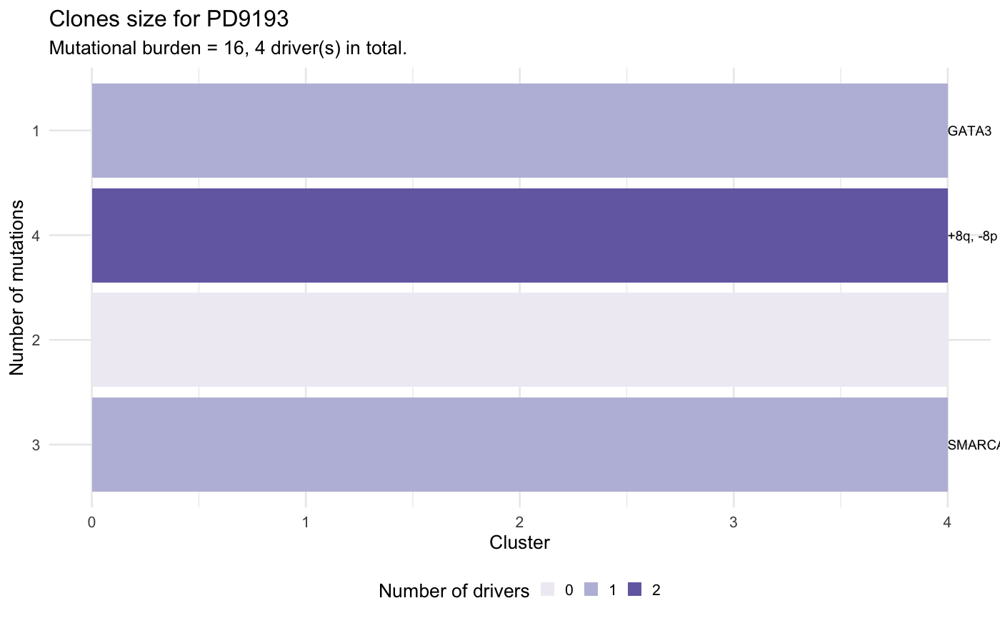

plot_clone_size.RdThis function creates a ggplot
barplot of the clone size values foe each clone in the patient's data.
The size of a clone is defined as the number of mutations assigned
to it, and is provided in input.
The barplot is annotated to report wether a subclone with a driver is significantly larger than the expected size for a subclone without driver. To carry out this test subclones without drivers are used to estimate the parameters of a univariate Gaussian distribution (mean and standard deviation), the p-value is then computed from the fit distribution through the `pnorm` function.
The confidence level for the test can be passed as parameter.
plot_clone_size(x, alpha_level = 0.05)
| x | An |
|---|---|
| alpha_level | Alpha level for the test, default is 0.05. |
| ... | Extra parameters, not used. |
A ggplot plot.
data(mtree_input) x = mtrees( mtree_input$binary_clusters, mtree_input$drivers, mtree_input$samples, mtree_input$patient, mtree_input$sspace.cutoff, mtree_input$n.sampling, mtree_input$store.max )#> [ mtree ~ generate mutation trees for PD9193 ] #> Sampler : 10000 (cutoff), 5000 (sampling), 100 (max store) #> Suppes' conditions : >= #> # A tibble: 4 x 14 #> Misc patientID cluster is.driver is.clonal PD9193d PD9193e PD9193f PD9193g #> <chr> <chr> <chr> <lgl> <lgl> <dbl> <dbl> <dbl> <dbl> #> 1 cuto… PD9193 2 FALSE FALSE 1 1 1 0 #> 2 cuto… PD9193 3 TRUE FALSE 1 0 0 0 #> 3 cuto… PD9193 1 TRUE TRUE 1 1 1 1 #> 4 cuto… PD9193 4 TRUE FALSE 1 0 1 1 #> # … with 5 more variables: PD9193h <dbl>, PD9193i <dbl>, PD9193j <dbl>, #> # PD9193k <dbl>, nMuts <dbl> #> #> ✔ Structures 3 - search is exahustive #> ✔ Trees with non-zero sscore 3 storing 3 #>plot_clone_size(x[[1]])#> Warning: Removed 1 rows containing missing values (geom_text).